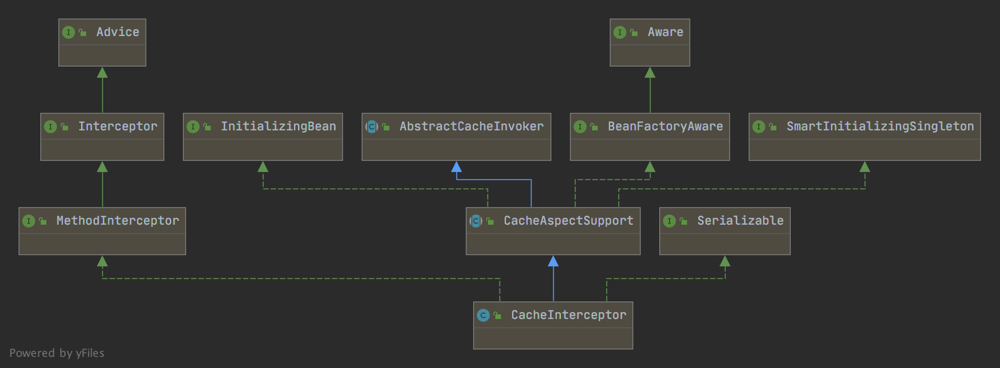

上上篇还有一章 CacheInterceptor 的基类 CacheAspectSupport 没有细讲，这篇详细讲解一下。
CacheAspectSupport 详解
先看看 CacheInterceptor 的继承关系：

CacheAspectSupport 又继承自 AbstractCacheInvoker，所以我们从 AbstractCacheInvoker 开始看起：
AbstractCacheInvoker
先看源码：
1 | public abstract class AbstractCacheInvoker { |
errorHandler 默认使用 SimpleCacheErrorHandler 实现，即直接抛出所有异常。
提供了四个 doXXX 方法（XXX = Get/Put/Evict/Clear）分别调用了 cache 的四个方法，并交给 errorHandler 处理异常。
AbstractCacheInvoker 小结
AbstractCacheInvoker 的作用就是在最基本的 cache 的基本操作上包了一层异常处理。
CacheAspectSupport
CacheAspectSupport 的 Optional 支持
先说此处有个有意思的地方。CacheAspectSupport 支持对 Optional 拆包。但由于 Optional 是 Java 8 才有的新特性，为了避免对 Java 8 的硬依赖，对 Optional 类用了一个特殊的加载方式：
1 | private static Class<?> javaUtilOptionalClass = null; |
CacheAspectSupport 的属性检查
1 |
|
简而言之就是：cacheOperationSources 和 errorHandler 必须设置、在没有定义 cacheResolver 的情况下会从容器取 cacheManager。
CacheAspectSupport 的核心代码
1 | protected Object execute(CacheOperationInvoker invoker, Object target, Method method, Object[] args) { |
首先由 CacheOperationSource 从 method 和 targetClass 的注解生成对应的 CacheOperation 集合，然后将操作、方法、参数等打包整理成一个缓存操作的上下文 CacheOperationContexts。
接下来就是 execute 的主逻辑：
1 | private Object execute(final CacheOperationInvoker invoker, Method method, CacheOperationContexts contexts) { |
首先区分是否有同步标记，同步标记是在构造 CacheOperationContexts 时由 determineSyncFlag(method) 方法确定的。只有 Cacheable 操作有 sync 标记，且只能允许有这一个 Cache 操作，且只允许有一个 Cache，且不支持 unless 注解。
所以对于同步调用而言，取出这个 CacheableOperation，通过 isConditionPassing(context, CacheOperationExpressionEvaluator.NO_RESULT) 判断是否符合条件，符合条件则进行缓存读写操作（尝试从缓存获取，没有则执行函数并写入缓存），否则直接执行函数。对于同步调用，此处已经结束了。
对于没有同步标记的情况，首先由 processCacheEvicts 执行调用前的缓存清除操作：
1 | private void processCacheEvicts(Collection<CacheOperationContext> contexts, boolean beforeInvocation, Object result) { |
关于 performCacheEvict 的细节有机会细讲。
接下来，由 findCachedItem(contexts.get(CacheableOperation.class)) 获取 CacheableOperation 命中的缓存。
如果未命中，则聚合之后 Cacheable 操作需要的 put 请求，聚合函数如下：
1 | private void collectPutRequests(Collection<CacheOperationContext> contexts, |
接下来看 cacheHit 非空，如果也没有 CachePut 操作，那么可以直接取 cacheHit 作为返回值。否则需要调用方法作为返回值。
再将显式注解的 CachePutOperation 聚合到之前的 Put 操作集合中，依次调用 cachePutRequest.apply(cacheValue)。
最后执行函数后清空缓存的 CacheEvicts 操作。然后返回之前的返回值。
没有仔细讲的细节
在这个过程中，对返回值和异常穿插 wrap 和 unwrap 的处理，支持了有 Optional 的情况。
关于例如 generateKey 这些设计到的表达式 Evaluation 的部分下章细讲。